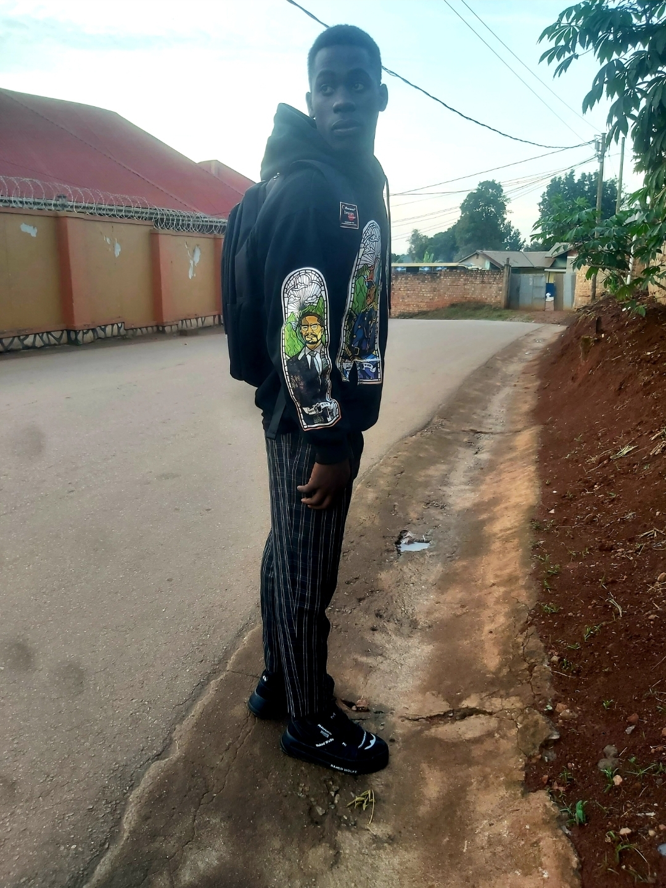

PROFILE

INTRODUCTION
- Name: Mujjuzi Stuart
- Headline: Computer Science student / Software Development and AI Enthusiast
- Location: Wakaliga, Kampala
OBJECTIVE
Highly motivated Computer Science student with passion for software development Artificial Intelligence and machine language.
EXPERIENCE
- Software developer intern at MK logistics.
- Developed a webpage using python.
- Mentored students in programming concepts.
EDUCATION
Bachelor of Science in Computer Science.(expected 2025)
SKILLS
- Able to program using various programming languages.
- Able to develop frameworks.
- able to manage databases
PROJECTS
AI power chatbot: developed a chatbot using natural language proccessing amnd machine language.
CERTIFICATIONS
- Certified Java developer
- Oracle Co-operation certification.
RECOMMENDATIONS
Stuart is an exceptional student with strong foundation in Computer Science eager to learn and apply aquired skills.
Dr.Martin Kubanja, Uganda Martyrs University
ADDITIONAL INFORMATION
- Hobbies: coding, reading and researching
- Language proficiency: Fluent in English and Conversational in French and Kiswahili.